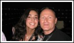

| Show 02 June 2010 |
|
Eurovision Song
Contest with Radio International and Oikotimes.
 CONGRATULATIONS!!!!
Germany won the 2010 Eurovision Song Contest in Oslo, Norway when the
55th Song Contest was staged in the Telenor Arena. Lena performed
"Satellite" that brought the
second victory for Germany on 29 May 2010. CONGRATULATIONS!!!!
Germany won the 2010 Eurovision Song Contest in Oslo, Norway when the
55th Song Contest was staged in the Telenor Arena. Lena performed
"Satellite" that brought the
second victory for Germany on 29 May 2010.
 EUROVISION 2010 - We Shared the Moment: The team of
Radio International and Oikotimes.com are back to home base with many
interviews and presentations from the event in Oslo. The next few weeks
Radio International will be assessing the Eurovision Song Contest with
our regular Eurovision Experts and of course play your favourites
throughout the show. Also there will be interviews to come with the
Eurovision performers. This week Eric Lehmann from OGAE Luxembourg joins Radio International to analyse the organisation on location, the standard of the songs and the shows as
well. EUROVISION 2010 - We Shared the Moment: The team of
Radio International and Oikotimes.com are back to home base with many
interviews and presentations from the event in Oslo. The next few weeks
Radio International will be assessing the Eurovision Song Contest with
our regular Eurovision Experts and of course play your favourites
throughout the show. Also there will be interviews to come with the
Eurovision performers. This week Eric Lehmann from OGAE Luxembourg joins Radio International to analyse the organisation on location, the standard of the songs and the shows as
well.
Eurovision 2010 Interview with Georgia's Sofia Nizharadze:
Giorgia's entry "Shine" was performed by the lovely Sofia or Sopho and
reached a remarkable nineth place in the 2010 Eurovision Song Contest.
During the run up to the Semi Finals and Final in Oslo Georgia also
celebrate their Independence Day and through a massive reception party
with food and drinks from Georgia. JP and Helena had the big pleasure to
meet Sofia for an interview after her Press Conference. You can hear
that interview in this week's edition of the show.
 Eurovision News. Luke
Fisher joins us on a weekly basis to supply us with the latest
happenings in the world of the Eurovision Song Contest. Eurovision News
is available on www.eurovision.tv,
oikotimes.com,
esctime.com, escdaily.com, esctoday.com and escflashmalta.com. Listen
to
a
pick
of the Eurovision News also on Radio
International: Eurovision News. Luke
Fisher joins us on a weekly basis to supply us with the latest
happenings in the world of the Eurovision Song Contest. Eurovision News
is available on www.eurovision.tv,
oikotimes.com,
esctime.com, escdaily.com, esctoday.com and escflashmalta.com. Listen
to
a
pick
of the Eurovision News also on Radio
International:
This
is
just
a
selection. Go to www.oikotimes.com
for detailed information.
 New Release: Former Maltese entrant to the Junior
Eurovision Song Contest (2005) - Thea Saliba has released her brand new
song which we had the big pleasure to premier on Radio International
this week. The new song is called "I'm your Fan" which was produced and
recorded in April 2010. Good luck to Thea and her musical career. To
find out more about Thea visit the following website by clicking here. New Release: Former Maltese entrant to the Junior
Eurovision Song Contest (2005) - Thea Saliba has released her brand new
song which we had the big pleasure to premier on Radio International
this week. The new song is called "I'm your Fan" which was produced and
recorded in April 2010. Good luck to Thea and her musical career. To
find out more about Thea visit the following website by clicking here.
Eurovision Quiz: Scratch your heads and bite your
nails at our weekly Eurovision
Song Contest Quiz. Good luck and win a copy of a past
Eurovision Song
Contest Final on DVD. The first two right entries
naming
the five
clips with Artist, Song, Country and Year will win. Send your answers
via
the website's CONTACTs
page.
Eurovision Song
Contest Calendar of Events:
Check out a
detailed listing of all events scheduled around
Europe. If you hear of something we have not listed please drop us a
line by clicking here
and let us know. After Eurovision is before Eurovision and to bridge
the Eurovision Gap many Eurovision Clubs will be holding their annual
convention.
Upcoming Events:
12 Jun 2010 - Eurovision
Artists Zomerdag (Summer's Day) 2010 with Hera Bjoerk as special
guest
17 Jul 2010 - 10th Anniversary of Eurovision Club Germany
11 Sep 2010 - International Eurovision Party in Setubal/ Portugal
16 Oct 2010 - EUROBASH 2010 in
Manchester, OGAE UK
30 Oct 2010 - OGAE Luxembourg Gala
06 Nov 2010 - Eurovision
Club (EC) Germany's Annual Convention
Eurovision Song Contest Interviews the Radio
International Team has done with the Eurovision performers can be heard
by visiting our Eurovision
section of this website or check out the Radio International
goes.... part of the website.
Eurovision Music requests as well as other music requests are most welcome and can be done via our website's CONTACT US page. Let us know what you want to hear and where you are from. Due to the large number of requests we received and cannot accommodate this week these requests will be added to the play list for the future shows. Eurovision Radio Shows on other European Radio Stations  Check out JP's All Eurovision Hit Radio
on this website. Follow this link to listen.
But there are also other radio stations offering nice Eurovision shows.
Here is a small selection. Enjoy.
Check out JP's All Eurovision Hit Radio
on this website. Follow this link to listen.
But there are also other radio stations offering nice Eurovision shows.
Here is a small selection. Enjoy.
Malta's Eurovision Radio
comes from the sunny island presented by Deo Grech on
Super ONE Radio
every Tuesday from 2045 - 2145 hours. You can contact Deo during the
show and request your favourite Eurovision songs. The show is in
Maltese mixed with English. Click here
for further information and also if you would like to listen to back
issues of Malta's Eurovision Radio. The new season has begun.
EurovisiO
Radio - a brand new 24 hours a day
Eurovision Internet Radio
Station based in Antwerp,
Belgium. Philip Vereyken will be thrilled to
have you on board on Monday evenings when his show EurovisiO will be
broadcast around the World. Find out more details here
and you can join EurovisiOradio Radio 24 hours a day.
The EXPAT part of Radio International.
During the show we broadcast a mix of infotainment content including: Movie Guide, EXPAT News, Theatre updates, Space, Science & Technology News, Concert Updates and the odd stories from around the World. Also there is the weather forecast for the upcoming weekend locally and the weekly worldwide Temperature Check.
EXPAT/Dutch/Community News: Get your daily update of the Dutch News in English by subscribing to their Newsletter with a summary of the latest events in and around the Netherlands. Click here for the website.
The English Breakfast Team entertains the EXPATs in the
Netherlands from the SALTO
Radio station in Amsterdam. Tune in for the latest current affairs
items, sports and news. How to listen to THE ENGLISH
BREAKFAST
visit their their website.
|
| < Prev | Next > |
|---|